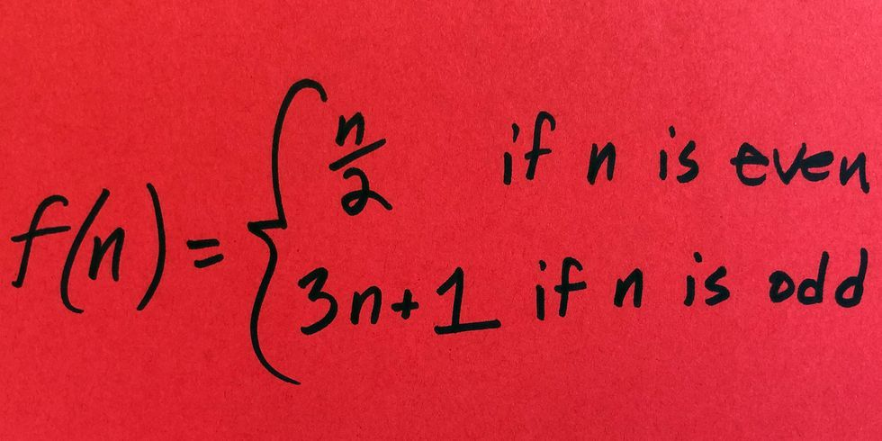
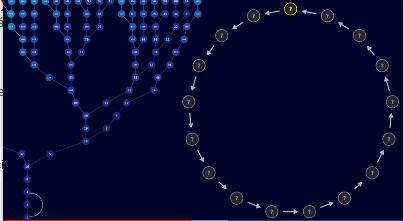
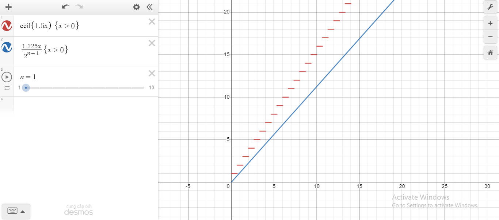

By David Pham
The Collatz conjecture is one of the most famous unsolved problems in mathematics.
The conjecture asks whether repeating two simple arithmetic operations will eventually transform every positive integer into 1.
It concerns sequences of integers in which each term is obtained from the previous term as follows:
If the previous term is even, the next term is one half of the previous term, else, the next term is 3 times the previous term plus 1. For example:
3 -> 10 -> 5 -> 16 -> 8 -> 4 -> 2 -> 1
The conjecture is that these sequences always reach 1, no matter which positive integer is chosen to start the sequence. [1]

There are 2 types of counterexamples to disprove the conjecture:
There may have a number that grows to infinite or a sequence of numbers that loops itself.

Right now, we will try to prove that there's no number that grows to infinite
Disclaimer: I know that I'm wrong all over the place, and there are some promising proofs on the Internet, but this is my attempt to solve 1/2 of the conjecture
Every time you multiply an odd number by 3 then add 1, it will always become an even number
that means the next step is to divide by 2. We could simplify the odd rule by divide 2 immediately:
\( \frac{3x+1}{2}=1.5x+0.5 \)
You could think that "+0.5" is rounding up the number:
\( 1.5x+0.5=\left \lceil{1.5x}\right \rceil\)
This will be our new rule for the odd numbers.

Imagine, if we apply the new rule to an odd number, then, because the next number is even, we take it and divide by 2 n times (n>1) until the new number is odd, next, we apply the new rule to that new number. We could simplify what we just said with an equation:
\(\left \lceil{1.5*\frac{\left \lceil{1.5x}\right \rceil}{2^n}}\right \rceil \approx \frac{2.25x}{2^n}=\frac{1.125x}{2^{n-1}} (n>0)\)
If we plot that equation with the new rule in a graph (I will use Desmos), you could see that the equation rises slower than our new rule.
Hence, we could see that even numbers can effect our sequence to fall down to 1. That means the sequence mustn't have even numbers
We know that the first number must be an odd number.
If the first number has a remainder of 1 when divide by 4, then the second number is even because \(\left \lceil{1.5(4x+1)}\right \rceil = \left \lceil{6x+1.5}\right \rceil = 6x+2 = 2(3x+1)\).
And the first number is odd, so it must has a remainder of 3 when divide by 4.
If the first number has a remainder of 3 when divide by 8, then the third number is even because \(\left \lceil{1.5 \left \lceil{1.5(8x+3)}\right \rceil}\right \rceil = \left \lceil{1.5(12x+5)}\right \rceil = \left \lceil{18x+7.5}\right \rceil = 18x+8 = 2(9x+4)\).
And the first number has a remainder of 3 when divide by 4, so it must has a remainder of 7 when divide by 8.
You could see a pattern that the first number must has a remainder of \(2^n-1\) when divide by \(2^n\) to make the first n+1 numbers to be odd.
Because the sequence grows to infinity, the sequence must take \(\infty\) steps to reach it, thus the first number must has a remainder of \(2^\infty-1\) when divide by \(2^\infty\).
That means the first number in the sequence is:
\(x_{0} = 2^\infty *a + 2^\infty - 1 (a = \frac{x_{0}}{2^\infty})\)
Because \(2^\infty = \lim_{x\to\infty^+} 2^x = \infty\):
\(x_{0} = \infty * a + \infty - 1 (a = \frac{x_{0}}{\infty})\)
\(x/\infty=0\) => a = 0:
\(x_{0} = \infty * 0 + \infty - 1 = \infty - 1 = \infty\)
If the first number is infinity, whatever we do, we just get a sequence of infinities, but we want a sequence that grows to infinity, not a sequence of infinities, so that means there are no number that grows to infinity.
If you want to ask me something, you can contact me through email and I try to answer my best at Twiiter.